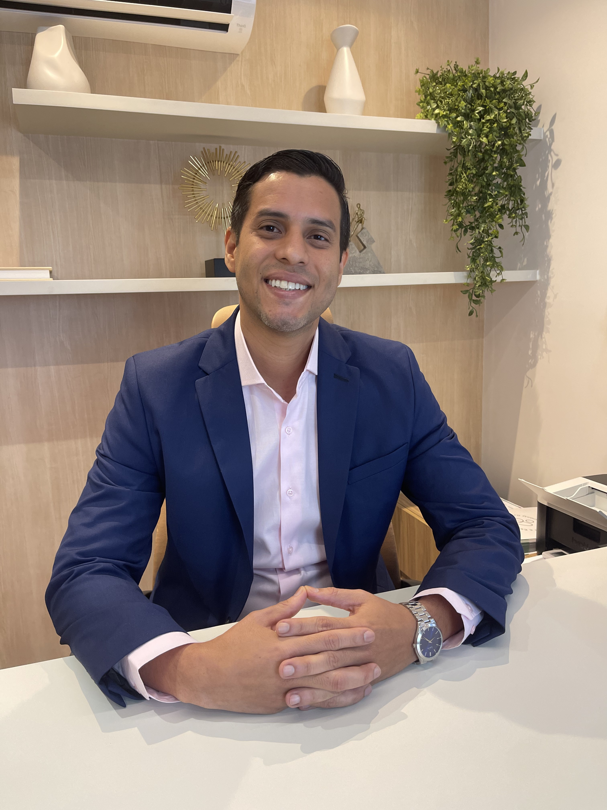
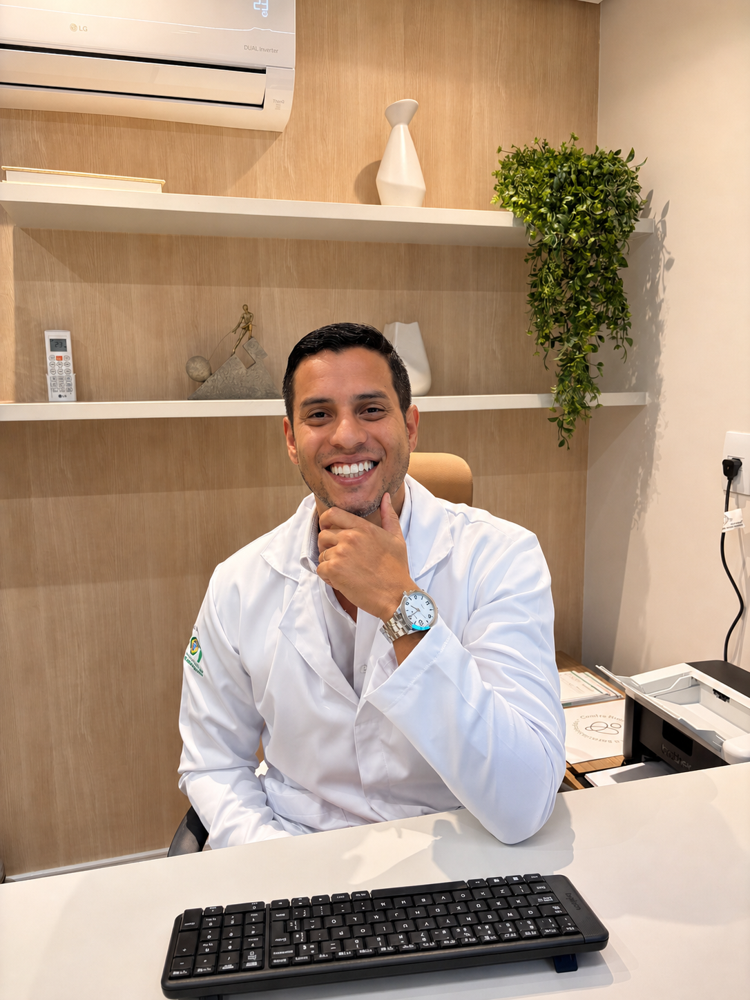
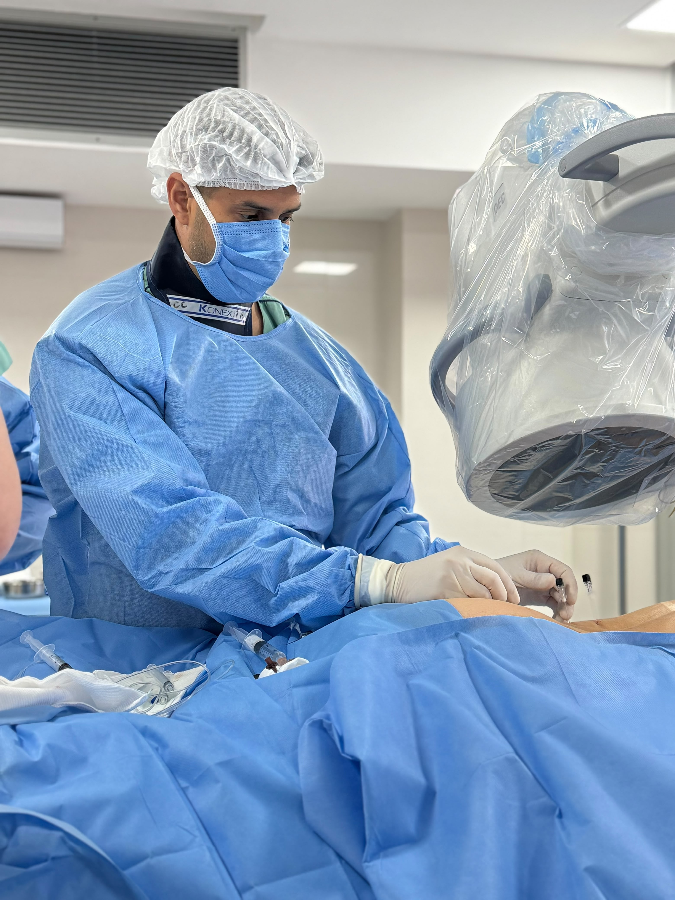
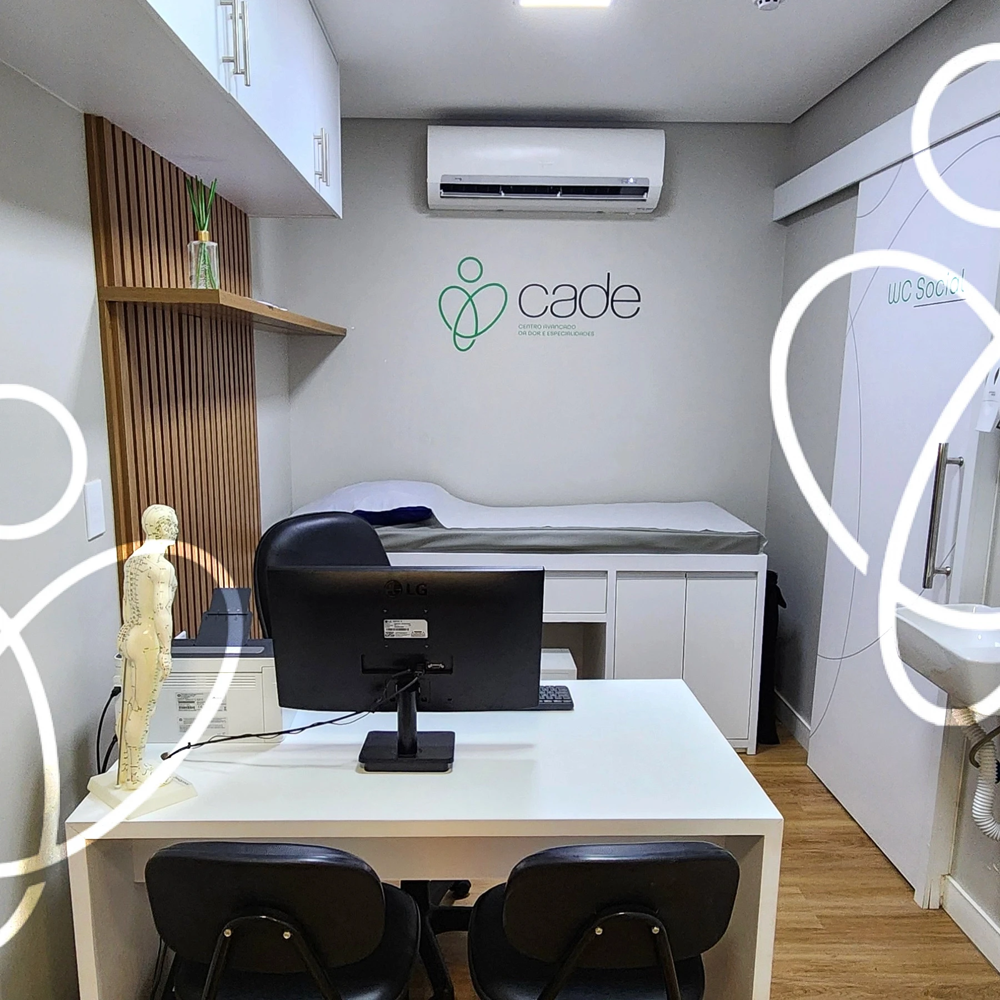
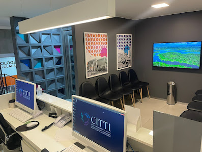
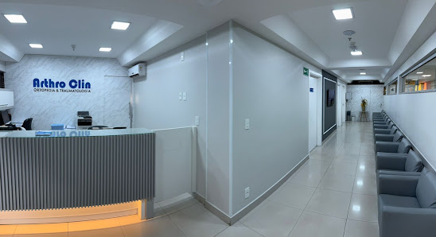
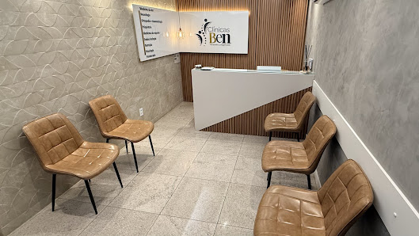

Tratamento da dor crônica
Abordagem completa e individualizada para dor persistente.
Ortopedia e medicina da dor
Avaliação completa, diagnóstico preciso e tratamentos individualizados para alívio da dor e recuperação do movimento.
CRM-DF 29441 • RQE 24819 • TEOT 20671


Sobre mim
Em minha trajetória, passei por diferentes áreas da medicina até chegar à ortopedia e à medicina da dor. Foram experiências que fortaleceram algo que carrego comigo até hoje: cuidar vai muito além do tratamento.

Tratamentos personalizados
Técnicas minimamente invasivas guiadas por imagem para tratar a causa da dor com segurança, precisão e melhores resultados.
Abordagem completa e individualizada para dor persistente.
Aplicação precisa de medicamentos no local da dor.
Identificam a origem da dor e orientam a conduta.
Técnica para reduzir a transmissão da dor.
Auxílio em casos de desgaste e dor articular.
Condutas indicadas após avaliação individualizada.
Recursos para dor, inflamação e recuperação dos tecidos.
Procedimentos direcionados para aliviar e restaurar função.
Detalhes de cada terapia serão incluídos na próxima etapa.
O atendimento
O cuidado começa pela escuta: entender o que mudou na sua rotina, o que causa desconforto e quais são as suas dúvidas.
Entendemos sua história para ir além dos sintomas.
Planos direcionados à causa, não apenas à dor.
Orientação clara em cada etapa do tratamento.
Particular e convênios
A disponibilidade pode variar conforme o plano, o procedimento e a necessidade de autorização prévia. Terapias podem não ser cobertas dependendo do plano de saúde.
Locais de atendimento

Taguatinga
QS 3, Ed. Pátio Capital, lote 03, loja 16 — Taguatinga, Brasília — DF, 71953-000

Águas Claras
Rua 5 Norte, lote — Águas Claras, Brasília — DF, 71907-720

Taguatinga Sul
Hospital Santa Marta, St. E Sul QSE 11, Área Especial 1 e 17, sala 205 — Taguatinga — DF, 72025-110

Asa Sul
Edifício Pátio Brasil, SCS Quadra 7, Bloco A, sala 1110 — Brasília — DF, 70307-901
Avaliações
As três avaliações serão incluídas assim que os textos reais autorizados forem definidos.